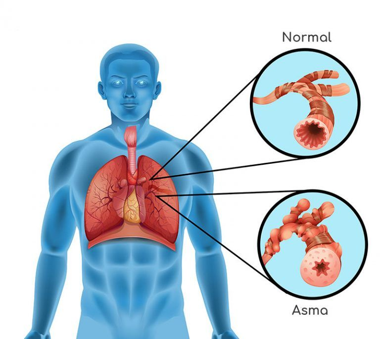

Asma
El asma es una enfermedad crónica que provoca que las vías respiratorias de los pulmones se hinchen y se estrechen. Esto hace que se presente dificultad para respirar como sibilancias, falta de aliento, opresión en el pecho y tos.

Causas
El asma es causada por hinchazón (inflamación) en las vías respiratorias. Cuando se presenta un ataque de asma, los músculos que rodean las vías respiratorias se tensionan y el revestimiento de dichas vías se inflama.
Síntomas
- Tos con o sin producción de esputo (flema).
- Retracción de la piel entre las costillas al respirar.
- Dificultad para respirar que empeora con el ejercicio o la actividad.
- Sibilancias (sonido silbante al respirar).
Pruebas y exámenes
El proveedor de atención médica utilizará un estetoscopio para escuchar los pulmones. Los exámenes pueden incluir pruebas de la función pulmonar, radiografías de tórax y pruebas de alergia.
Tratamiento
El objetivo del tratamiento es evitar las sustancias que desencadenan los síntomas y controlar la inflamación de las vías respiratorias mediante medicamentos como los inhaladores de rescate o de control a largo plazo.
Expectativas (pronóstico)
No existe cura para el asma, aunque los síntomas algunas veces disminuyen con el tiempo. Con el tratamiento adecuado y el control del entorno, la mayoría de las personas pueden llevar una vida normal.
Video informativo sobre el Asma
Asegúrese de activar los subtítulos del reproductor para una mejor accesibilidad.